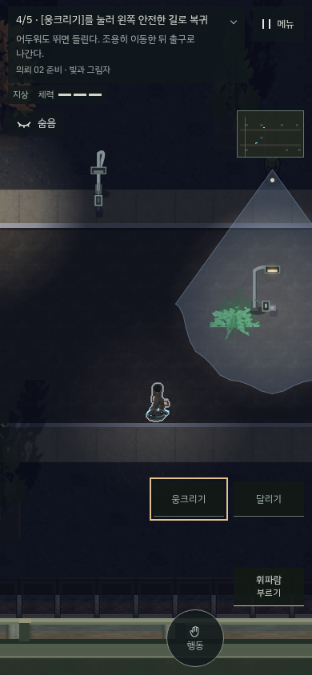
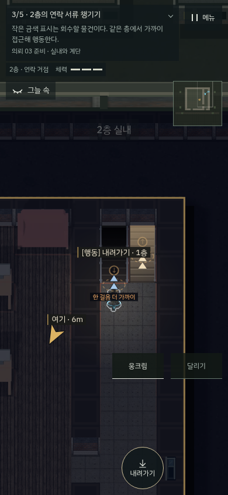

처음부터 변장·전기·도구 선택을 한꺼번에 요구하던 흐름을 나눴습니다. 현재 행동 하나와 그 이유를 기존 목표창에 표시하고, 쓰지 않는 조작은 기본 연습에서 숨깁니다.
| 구간 | 직접 해보는 것 | 다음 |
|---|---|---|
| 첫걸음 | 이동·발소리·웅크림·시야·풀숲·유인 | 제압 연습 |
| 물류 골목 | 바짝 접근·짧게 기절·운반·풀숲에 몸 숨기기 | 의뢰 01 |
| 상가 후문 | 연습용 스위치·빛 감소·시야 밖 통과 | 의뢰 02 |
| 연락 거점 | 실내 진입·계단·2층 서류 회수·내려와 탈출 | 의뢰 03 |
첫 제압에서 강제 붙잡기·변장·대상 선택을 제거했습니다. 관련 기능은 선택 연습에서 익힐 수 있습니다. 새 준비 임무는 실제 맵과 기존 규칙으로 동작하며 본편 기술·포인트를 무료로 주지 않습니다. 전기 조작은 상가 후문 연습에서만 임시로 사용합니다.
처음 시작·결과 화면·이어 하기는 같은 순서를 추천합니다. 완료한 준비 임무는 반복 강제하지 않고, 본편을 장부에서 바로 선택할 수도 있습니다. 세 번째 의뢰에서는 처음 찾을 머리핀과 감방 문의 실제 위치를 안내합니다.


2층 서류 단계에서 가까운 내려가기 버튼을 강조하던 불일치도 수정했습니다. 목표와 같은 층·가까운 거리에서 해당 행동이 실제로 가능할 때만 강조합니다. 강조 수정 전후 원본·검사.
고정 시뮬레이션 시계와 시드로 실제 메뉴·키보드·터치 이동/버튼을 사용했습니다. 배우 위치·체력·장비·단계 완료는 강제로 바꾸지 않았습니다. 계단 경로 계획에는 기존 A*를 사용해 걸을 지점만 선택했습니다. 별도의 통제 검사는 완료 기록별 추천·조기 출구 차단·실패 복구·화면 크기별 안내를 검사합니다. 일반 신규 사용자의 이해도 조사나 모든 본편 완주 검증을 했다는 뜻은 아닙니다.
전후 비교 · 진행·복구 검사 · 첫 두 연습 실제 조작 · 두 준비 임무 실제 조작 · 회귀 결과 · 독립 검수 · 배포 상태